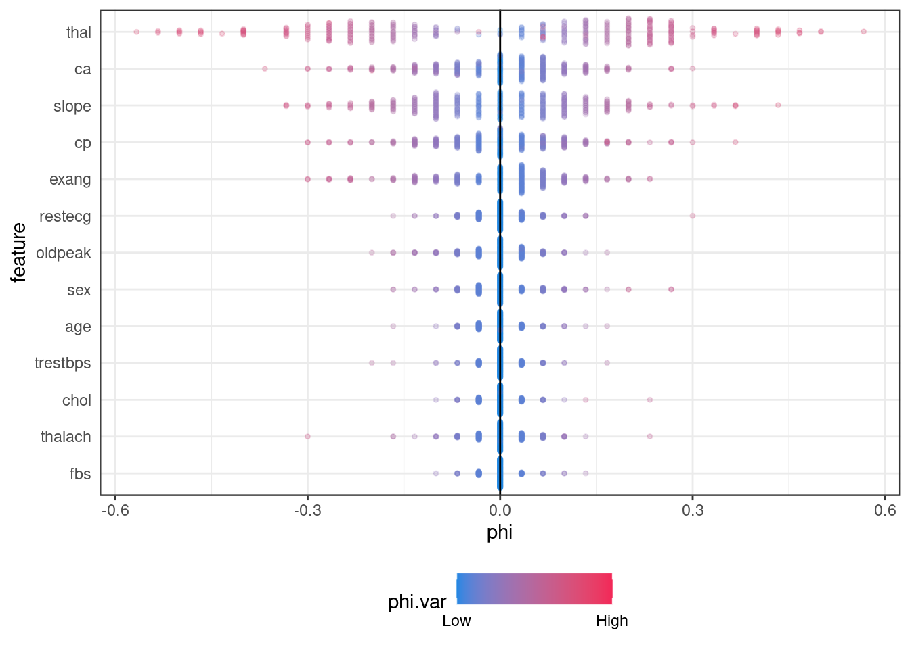

library(tidyverse)
library(data.table)
library(caret)
library(DT)
library(iml)
library(patchwork)
library(gridExtra)
heart <- fread("heart.csv")
heart %>% head %>%
datatable(options = list(scrollX = TRUE))Heart Disease Explainable ML
Heart Disease data set
correlation network plot ml In health research we are not only interested with prediction level but explanability of the fitted algorithm what people in health research call risk factors. We can use heart disease data set to figure out how we can utilize some of the mc.
I have stolen your idea. For someone working in health research your notebook is a gold mine. In health especially cohort studies, clinical trials people are largely still using generalized linear models because at least from them you can get odds/risk/rate ratios, p values, AIC and so on. I have implemented the same with R(see here). I have also searched for other materials online see here. Thank you.
Some Cleaning
You can can check the variable levels from here
heart[, sex := factor(sex,
levels = 0:1,
labels = c("female", "male"))]
heart[, cp := factor(cp,
levels = 0:3,
labels = c("angina", "atypical angina",
"non-anginal pain", "asymptomatic") )]
heart[, fbs := factor(fbs, levels = 0:1,
labels = c("fasting blood sugar <= 120 mg/dl)",
"fasting blood sugar > 120 mg/dl)"))]
lnls_restg <- c("normal",
"having ST-T wave abnormality \n (T wave inversions and/or \n ST elevation or depression
of >0.05 mV)",
"showing probable or definite \n left ventricular hypertrophy \n by Estes' criteria")
heart[, restecg := factor(restecg,
levels = 0:2,
labels = lnls_restg)]
heart[, exang := factor(exang,
levels = 0:1,
labels = c("yes", "no"))]
heart[, slope := factor(slope,
levels = 0:2,
labels = c("upsloping", "flat", "downsloping"))]
heart[thal == 0, thal := 1 ]
heart[, thal := factor(thal,
levels = 1:3,
labels = c("normal", "fixed defect", "reversable defect"))]
heart[, ca := factor(ca)]
heart[, target := factor(target,
levels = 0:1,
labels = c("No_heart_disease", "Heart_disease"))]Visualize categorical variables
nms <- names(heart)
categ_nms <- nms[sapply(heart, is.factor)]
categ_nms <- categ_nms[categ_nms != "target"]
plots_categ <- list()
for (i in categ_nms) {
plots_categ[[i]] = heart[, .(freq = .N), by = c(i,"target")] %>%
.[, perc := round(freq/sum(freq) * 100, 2), by = i] %>%
ggplot(aes_string(i, "perc", fill = "target")) +
geom_bar(stat = "identity", width = 0.5)+
geom_text(aes_string(i, "perc", label = "perc"),
size = 3 , position = position_stack(vjust = 0.5))+
theme(legend.position = "bottom")+
scale_fill_brewer(palette = "Dark2")
}
grid.arrange(grobs = plots_categ, ncol = 2)Visualize numeric variable
num_nms <- nms[sapply(heart, is.numeric)]
# zero_one <- function(x){
# minx = min(x, na.rm = T)
# maxx = max(x, na.rm = T)
#
# z = (x - minx)/(maxx - minx)
# }
#
# heart[, (num_nms) := lapply(.SD, zero_one), .SDcols = num_nms]
num_nms <- num_nms[num_nms != "target"]
for (i in num_nms) {
p = ggplot(heart, aes_string("target", i)) +
geom_boxplot()
print(p)
}Fit logistic regression
glm_heart <- glm(target ~., data = heart,
family = binomial())
library(broom)
tidy(glm_heart) %>% datatable() %>%
formatRound(columns = c("estimate", "std.error", "statistic", "p.value"), digits = 4)Chisq test
drop1(glm_heart, test = "Chisq") %>% tidy %>%
datatable() %>%
formatRound(columns = c("df", "Deviance", "AIC", "LRT", "p.value"), digits = 4)ML model
train_ctrl <- trainControl(method = "cv",
number = 5,
summaryFunction = twoClassSummary,
classProbs = TRUE,
allowParallel=T,
#index = cv_fold,
verboseIter = FALSE,
returnResamp = "all",
savePredictions = "final",
search = "grid")
ranger_grid <- expand.grid(splitrule = "extratrees",
mtry = c(2, 5, 10),
min.node.size = c(2, 5, 7))
heart_randomforest <- train(target~ .,
data = heart,
trControl = train_ctrl,
tuneGrid = ranger_grid,
method = "ranger")
heart_randomforest Random Forest
303 samples
13 predictor
2 classes: 'No_heart_disease', 'Heart_disease'
No pre-processing
Resampling: Cross-Validated (5 fold)
Summary of sample sizes: 243, 242, 243, 242, 242
Resampling results across tuning parameters:
mtry min.node.size ROC Sens Spec
2 2 0.9104137 0.8187831 0.8484848
2 5 0.9121292 0.7896825 0.8424242
2 7 0.9114558 0.8113757 0.8424242
5 2 0.9067981 0.8116402 0.8303030
5 5 0.9077201 0.8187831 0.8303030
5 7 0.9077040 0.8116402 0.8242424
10 2 0.9018118 0.8190476 0.8181818
10 5 0.9037117 0.8261905 0.8181818
10 7 0.9034632 0.8116402 0.8303030
Tuning parameter 'splitrule' was held constant at a value of extratrees
ROC was used to select the optimal model using the largest value.
The final values used for the model were mtry = 2, splitrule = extratrees
and min.node.size = 5.Var Importance
pred <- function(heart_randomforest, heart) {
results <- predict(heart_randomforest, newdata = heart, type = "prob")
return(results[[2L]])
}Partial Dependence
X_pred <- heart[, .SD, .SDcols = !"target"] %>%
as.data.frame()
model <- Predictor$new(model = heart_randomforest,
data =X_pred,
predict.function = pred,
y = heart$target)
effect <- FeatureEffects$new(model)effect$plot(features = c( "trestbps"))#effectimp <- FeatureImp$new(model, loss ="ce" )
#imp
var_important <-imp$results %>% data.table()
setorder(var_important, -importance)
plot(imp)interact <- Interaction$new(model, feature = "thal")
plot(interact)library(tictoc)
tic()
shap_list <- vector("list", nrow(X_pred))
for (i in 1:nrow(X_pred)) {
shap <- Shapley$new(model, x.interest = X_pred[i, ], sample.size = 30)
shap_import <-shap$results %>% data.table()
shap_import <- shap_import[class == "Heart_disease"]
shap_list[[i]] <- shap_import[, record_id := i]
}
toc()56.451 sec elapsedshap_values <- rbindlist(shap_list, fill = T)library(ggforce)
shap_values[, feature := factor(feature, levels = rev(var_important$feature) )]
minx <- shap_values[, min(phi.var)]
maxx <- shap_values[, max(phi.var)]
ggplot(shap_values, aes(feature, phi, color = phi.var))+
#geom_point()+
ggbeeswarm::geom_quasirandom(groupOnX = FALSE, varwidth = TRUE, size = 0.9, alpha = 0.25) +
geom_hline(yintercept = 0) +
scale_color_gradient(low="#2187E3", high="#F32858",
breaks=c(minx,maxx), labels=c("Low","High"), limits=c(minx,maxx))+
theme_bw() +
theme(axis.line.y = element_blank(),
axis.ticks.y = element_blank(), # remove axis line
legend.position="bottom") +
coord_flip()